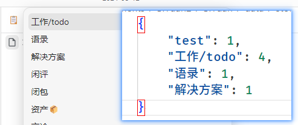

最近更新.rss.xml
使用情况
llrt 的运行速度比 node 还是慢了许多，在我这个场景下它比 node 要慢上两倍，gc 的运行速度也要慢许多。
但初始内存占用和启动速度是碾压 node 的。
由于运行时还不是特别完善的问题，很容易踩坑，所以除非你急需压缩 js 的运行内存占用/冷启动速度或者和我一样就是想要这么做，还是建议直接使用 node 吧。
但初始内存占用和启动速度是碾压 node 的。
由于运行时还不是特别完善的问题，很容易踩坑，所以除非你急需压缩 js 的运行内存占用/冷启动速度或者和我一样就是想要这么做，还是建议直接使用 node 吧。
llrt 的运行速度比 node 还是慢了许多，在我这个场景下它比 node 要慢上两倍，gc 的运行速度也要慢许多。
2. Dockerfile
得益于 llrt ，可以不用依赖任何环境，直接使用 FROM scratch 来得到最小的docker镜像体积
dockerfile
FROM scratch
WORKDIR /home/
COPY dist_backend/app.lrt /home/app.lrt
COPY llrt /home/llrt
COPY dist/ /home/dist/
CMD ["/home/llrt", "/home/app.lrt"]
再经过 docker 的压缩后就得到了 3.78MB 这个数字。
再经过 docker 的压缩后就得到了 3.78MB 这个数字。
dockerfile
FROM scratch
WORKDIR /home/
COPY dist_backend/app.lrt /home/app.lrt
COPY llrt /home/llrt
COPY dist/ /home/dist/
CMD ["/home/llrt", "/home/app.lrt"]
得益于 llrt ，可以不用依赖任何环境，直接使用 FROM scratch 来得到最小的docker镜像体积
打包微小体积的 docker 镜像
1. 代码打包
这方面我使用的是 tsup 将 ts 源码打包为一个 js 文件。
然后使用 llrt compile 命令将 js 文件编译为 .lrt 文件（这一步也能减少差不多 30%的体积）
然后使用 llrt compile 命令将 js 文件编译为 .lrt 文件（这一步也能减少差不多 30%的体积）
这方面我使用的是 tsup 将 ts 源码打包为一个 js 文件。
迁移遇到的问题
主要问题是 llrt 没有提供 http 模块（tixiki.js 也是）, 幸运的是它提供了 net 模块
所以我基于 net.createServer 手搓了一个简易 http 服务和洋葱路由 server.ts 。
这期间还发现了 llrt 一个 cpu 占用异常：https://github.com/awslabs/llrt/issues/546
主要问题是 llrt 没有提供 http 模块（tixiki.js 也是）, 幸运的是它提供了 net 模块
这期间还发现了 llrt 一个 cpu 占用异常：https://github.com/awslabs/llrt/issues/546
所以我基于 net.createServer 手搓了一个简易 http 服务和洋葱路由 server.ts 。
选择 js 运行时 （llrt）
要实现这么小的镜像肯定不能再使用 node 这种等级的 js 运行时了，现在最流行的轻量级 js 运行时可以锁定为 QuickJS
我要迁移的项目是我之前写的一个字体裁剪工具 web-font , 它除了纯 js 的部分外还涉及到文件读写和 http server 部分的 api ，QuickJS 作为纯粹的解释器是没有这方面的 api 的。
所以我选择使用 llrt 来作为运行时。
所以我选择使用 llrt 来作为运行时。
我要迁移的项目是我之前写的一个字体裁剪工具 web-font , 它除了纯 js 的部分外还涉及到文件读写和 http server 部分的 api ，QuickJS 作为纯粹的解释器是没有这方面的 api 的。
要实现这么小的镜像肯定不能再使用 node 这种等级的 js 运行时了，现在最流行的轻量级 js 运行时可以锁定为 QuickJS

但这三个运行时的打包体积都不小，在精简的情况下也在 50 mb 以上，我在这里记录一下我是如何将一个原来使用 node 开发的服务迁移为 3.78MB 的 docker 镜像。
在服务端一般使用 node 来运行 js ，除了 node 外流行的还有 bun/deno。
重构实现
我看上了 llrt 的小体积，于是实现了一版支持llrt 的
在速度方面，比node慢了足足一倍

在速度方面，比node慢了足足一倍
我看上了 llrt 的小体积，于是实现了一版支持llrt 的
9
20210816161940-zo21go13333333333333333333333333333333333333333333333333333333333333333333333333333333333
2
3
开始烧录固件&连接
esprunio 是需要先将固件写到板子中，然后才可以动态加载 js 代码执行。
在刷好固件后自动就配对了，但换电脑就需要重新刷配对一次（todo 寻找简单配对的方法）
esp8266 NodeMcu 烧录与连接
这块板子足够的便宜，花了12元就买了一块，芯片是 esp12-f ，150Kib ram (64KB 的 iRAM，96KB 的 dRAM espruino 中不需要了解这两个的区别，可以理解为有大概120Kib的ram供我们的代码使用，其他空间被 espruino占用了 ) 和 4mb 闪存。
先安装 esptool https://docs.espressif.com/projects/esptool/en/latest/esp32/installation.html#installation ，使用了虚拟环境安装，直接安装报错:
log
error: externally-managed-environment
× This environment is externally managed
╰─> To install Python packages system-wide, try apt install
python3-xyz, where xyz is the package you are trying to
install.
If you wish to install a non-Debian-packaged Python package,
create a virtual environment using python3 -m venv path/to/venv.
Then use path/to/venv/bin/python and path/to/venv/bin/pip. Make
sure you have python3-full installed.
If you wish to install a non-Debian packaged Python application,
it may be easiest to use pipx install xyz, which will manage a
virtual environment for you. Make sure you have pipx installed.
See /usr/share/doc/python3.11/README.venv for more information.
搞不懂 python 这一套，感觉它的版本很乱。按照下面的方法安装
创建一个虚拟环境并选择其名称，例如“esptoolenv”：python -m venv esptoolenv
激活虚拟环境：
在 Windows 上：esptoolenv\Scripts\activate (在创建虚拟环境的磁盘中)
在 Linux 或 MacOS 上：source esptoolenv/bin/activate
安装最新的 esptool.py活动虚拟环境中的版本：pip install esptool
您现在可以在此虚拟环境中使用它，而不会影响您的系统范围的安装：esptool.py <command>
当你使用完后 esptool.py，停用虚拟环境： deactivate。 通过再次激活环境可以重复使用。
如果您不再需要虚拟环境，可以通过删除 esptoolenv目录。
去 https://www.espruino.com/binaries/espruino_2v21_esp8266_4mb/ 将所有文件都下载到一个目录里，在该路径执行如下命令（在windows 下可能端口略有不同，具体请参照上面链接中的 readme
bash
esptool.py --port /dev/ttyUSB0 --baud 115200 write_flash --flash_freq 80m --flash_mode qio --flash_size 4MB 0x0000 "boot_v1.6.bin" 0x1000 espruino_esp8266_user1.bin 0x3FC000 esp_init_data_default.bin 0x3FE000 blank.bin
bash
esptool --port COM7 --baud 115200 write_flash --flash_freq 80m --flash_mode qio --flash_size 4MB 0x0000 "boot_v1.6.bin" 0x1000 espruino_esp8266_user1.bin 0x3FC000 esp_init_data_default.bin 0x3FE000 blank.bin
已经烧录过固件的先进行清除：
js
esptool.py --port [/dev/ttyUSB0|COM1] --baud 115200 erase_flash
提示要添加用户组，添加后重启电脑就能运行了，其中 flash_size 官网填的是 32m 但我运行报错， 改成 4MB （4*8=32mbit）后就可以了。
/dev/ttyUSB0 是插入的单片机串口名。
/dev/ttyUSB0 是插入的单片机串口名。
 一阵闪烁后成功了。
一阵闪烁后成功了。
一阵闪烁后成功了。在 chrome 浏览器打开 https://www.espruino.com/ide （我使用 chromium打开无法看到串口设备）
单击 Gear屏幕右上角的图标。
现在去 Communications在左侧。
设置 Baud Rate到9600（我这块板子标得是9600，我看网上其他教程是115200 ）
连接后我这里提示 Unable to retrieve board information. Connection Error? 也无法发送代码过去，然后看到这篇帖子：https://forum.espruino.com/conversations/318073/ 中提及波特率，我又改回 115200 连接成功（😮💨，板子后面的标识 9600 坑我
 连接成功，上方是之前失败的
连接成功，上方是之前失败的
连接成功，上方是之前失败的进阶使用(浏览器里链接不上也可以看看这里使用 esprunio 的 cli 连接)： espruino + typescript + vscode
在无法读取板信息的情况下主动指定 http://www.espruino.com/json/
js
esptool.py --port [/dev/ttyUSB0|COM1] --baud 115200 erase_flash
思源简单冲突对比
安装 toolkit 插件 0.0.12 并启用之后
其中 update 字段不一致的块会被标记红色外框。
现在你可以将鼠标放在两个窗口中间的resize分割线上滚动滚轮从而同时滚动两个窗口

然后打开命令面板执行 conflicted Comparison 命令

先并排放两个文档窗口

标签排序
node 版本管理
fnm（推荐使用） ：全平台
fnm（推荐使用） ：全平台
(n\nvm) 不支持 windows
bash
$ npm i -g n # n 模块是专门用来管理node版本的
#安装node版本 也可以安装指定版
$ n latest # 安装最新版
$ n stable # 安装稳定版
$ n lts # 安装最新的LTS官方版本
安装 toolkit-plugin-siyuan 插件
越常用的标签会排在越前面。
相关数据存储在 SiYuan/data/storage/petal/toolkit-plugin-siyuan/tagSort.json

我自己使用的一个工具箱插件
目前支持的功能，
https://github.com/2234839/toolkit-plugin-siyuan/tree/main